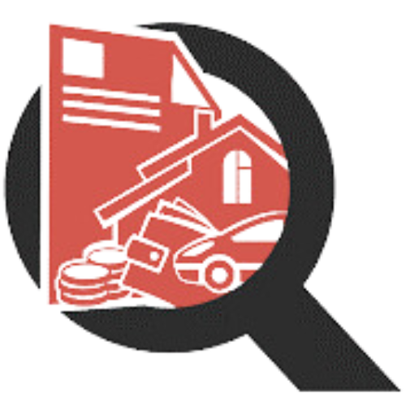
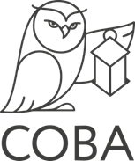
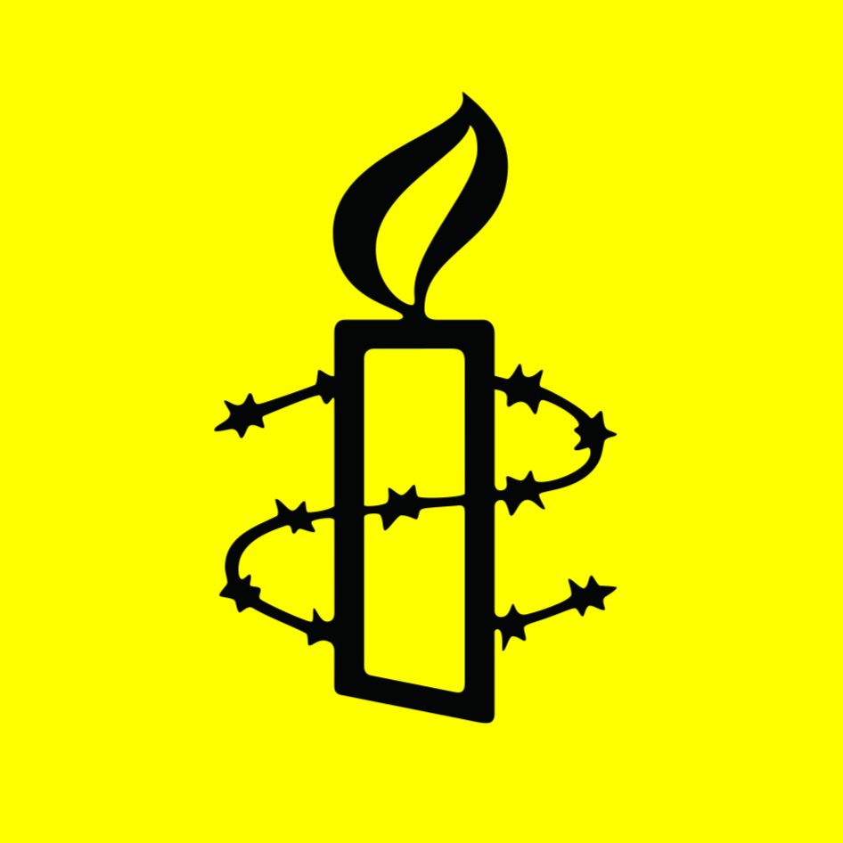
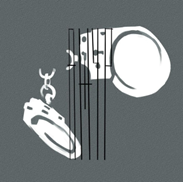
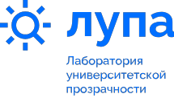

Волонтерская
команда
Сахарова
Волонтёрская команда Сахарова – это сообщество людей, которые хотят внести свой посильный вклад в защиту прав человека. Мы помогаем правозащитным организациям, проектам и инициативам с задачами, не требующими профессиональной подготовки или экспертных знаний.

О команде
Нас объединяют ценности Андрея Дмитриевича Сахарова, который считал, что права человека являются универсальными и неотъемлемыми для всех людей и был убежден в их ключевой роли для поддержания на Земле мира и справедливости.
В нашей команде каждый может найти себе занятие по душе, будь то помощь с конкретными задачами, организация мероприятий или общение с единомышленниками и создание совместных проектов.
Чем мы занимаемся?
Обычно мы помогаем нескольким правозащитным организациям одновременно, работая над краткосрочными и долгосрочными задачами — разными по формату и содержанию. Из текущих активностей всегда можно выбрать занятие, которое подходит вам по времени и тематике.
К каждой задаче мы разрабатываем подробные инструкции, а также помогаем по ходу работы, в том числе организуя онлайн-коворкинги. Для более сложных или требующих командной работы задач мы создаем телеграм-чаты, а для более простых — ограничиваемся общением в боте, к которому обязательно нужно подключиться. Это несложно, но требует предварительного знакомства с нашей координаторской командой.
Мы рады проводить время вместе не только выполняя задачи, но и устраивая неформальные встречи. Сейчас мы регулярно видимся на онлайн-терапевтических группах и в книжном клубе, периодически у нас проходят лекции и воркшопы. Мы всегда открыты для новых идей и форматов и с удовольствием поддержим ваши инициативы и задумки!
Заполняйте волонтёрскую анкету, если хотите присоединиться к нам!
Кому мы помогаем
Команда против пыток
Российская правозащитная организация, которая занимается общественным расследованием дел о применении пыток, опираясь на внутригосударственные механизмы защиты потерпевших. 18+
Узнать большеЦЗПЧ Мемориал
Российская правозащитная организация, которая составляет отчеты о нарушениях прав человека, оказывает юридическую и информационную поддержку политическим заключенным, беженцам, мигрантам и призывникам.
Узнать большеДекларатор
База данных о российских публичных должностных лицах: депутатах, чиновниках, судьях, представителях региональной и муниципальной власти, сотрудниках госкорпораций, госкомпаний и бюджетных учреждений.
Узнать большеТендерскоп
Проект независимых экспертов по госзакупкам, которые занимаются анализом государственных и муниципальных закупок с целью сделать эту сферу прозрачнее.
Узнать большеАрхив Сахарова
Негосударственный архив, который хранит документы и материалы из личных архивов Андрея Дмитриевича Сахарова и Елены Георгиевны Боннэр.
Узнать большеДумаБинго
Проект о лоббизме в российском парламенте, раскрывающий связи депутатов Госдумы и сенаторов Совета Федерации с крупным бизнесом, региональными элитами, силовиками и другими группами.
Узнать большеИЦ «Сова»
Группа исследователей, в сферу интересов которой входят проблемы национализма и ксенофобии, взаимоотношения религии и общества, формирование и реализация антиэкстремистской политики в России.
Узнать большеAmnesty International Россия
Отделение международной неправительственной организации, которая борется за соблюдение всех прав человека, закреплённых во Всеобщей декларации прав человека 1948 года.
Узнать большеОВД-Инфо
Независимый правозащитный медиапроект, который посвящен преследованиям по политическим мотивам в современной России, информирует о них и помогает задержанным на акциях протеста.
Узнать большеАльманах «Ажур»
Проект, посвящённый политическим репрессиям, который пытается дать слово политическим заключенным и поддерживать их письмами, а также содействовать организациям, оказывающим им помощь.
Узнать большеРусь сидящая
Неправительственная организация, целью которой — юридическая и гуманитарная помощь гражданам, столкнувшимся с нарушением своих прав со стороны следственных органов и пенитенциарной системы.
Узнать большеЛаборатория университетской прозрачности
Проект, который учит делать исследования прозрачности и коррупционных рисков в университетах, а также участвовать в изменении университетской политики и улучшать качество образования.
Узнать большеКак именно помогаем?
По-разному! Вот лишь некоторые из задач, которые у нас бывают:
 Работа с текстами: написание, вычитка, переводы;
Работа с текстами: написание, вычитка, переводы;
Работа с сайтами: поиск и редактирование информации, тестирование;
Транскрибация аудио- и видео-материалов;
 Мониторинг и анализ информации;
Мониторинг и анализ информации;
 Работа с Википедией;
Работа с Википедией;
 Создание контента для социальных сетей;
Создание контента для социальных сетей;
 Цифровизация материалов;
Цифровизация материалов;
 Работа с базами данных;
Работа с базами данных;
Написание и отправка писем.
FAQ
Люди из разных стран, городов, разного возраста и специальностей.
Это зависит только от вашей занятости и желания. А вообще – задачи бывают разные, могут занять как 20 минут, так и несколько часов
Задачи вы получаете через телеграм-бота, у каждой задачи — свой дедлайн. Все задачки варьируются по времени, которое на них уходит. Есть есть задачи срочные, а есть долгосрочные. Так что it depends!
Обстоятельства в жизни бывают разные, мы все это понимаем. Если нужна пауза, просто дайте об этом знать. А вернуться можно всегда... во всяком случае, к нам точно.
Вы будете помогать с задачами, не требующими специальных знаний. Все, что может предложить Волонтерская команда, вам по силам! Еще у нас есть регулярные терапевтические группы с психологом, на которые можно прийти, если почувствуете в этом необходимость.
Конечно! Наша команда — хорошая точка старта в правозащите
Заполнить анкету и поделиться своим контактом с нашим ботом. В нем мы и свяжемся с вами.
Самые разные — никогда не знаешь, какая задачка будет следующей! От дизайна до работы с Википедией — мы будем рады любым навыкам